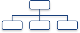

WELCOME TO THE AMIS POLICY DATABASE
The AMIS policy database gathers information on trade measures and domestic measures related to the four AMIS crops (wheat, maize, rice, and soybeans) as well as biofuels. The design of this database allows for comparisons across countries, across commodities and across policies for selected periods of time.
RESOURCES
POLICY CLASSIFICATION
This diagram illustrates how policies are categorized in the AMIS policy database
Open Diagram
POLICIES AT A GLANCE
Get a snapshot of the contents and potential of the policy database. Browse the pre-defined sets of interactive graphs that display different aspects of the database.
QUERY AND DOWNLOAD
Select, view and download subsets of the database. A value inspection tool allows for viewing, sorting and filtering the data.
ANALYSIS
Compare policy information with market information. Graphic tools offer contextual information to visually examine the possible relationship between selected policies and other variables such as production, trade and prices.
STATISTICAL NOTES
Look up how variables are defined and classified. Explanatory documents, diagrams and links provide background information on the organization and contents of the database.
FAO - Achieving food security for all is at the heart of FAO's efforts - to make sure people have regular access to enough high-quality food to lead active, healthy lives. FAO's mandate is to raise levels of nutrition, improve agricultural productivity, better the lives of rural populations and contribute to the growth of the world economy

FAO - Achieving food security for all is at the heart of FAO's efforts - to make sure people have regular access to enough high-quality food to lead active, healthy lives. FAO's mandate is to raise levels of nutrition, improve agricultural productivity, better the lives of rural populations and contribute to the growth of the world economy.

HLTF - The UN High Level Task Force on Global Food Security (HLTF) is a coordination mechanism bringing together 23 international entities chaired by the UN Secretary General with the Director General of FAO as Vice Chair. Its remit is to ensure coherence and coordination of support provided by the international system to countries and regions, and to global initiatives. The strategy for this support is based on a comprehensive twin-track approach to food and nutrition security.

IFAD - The International Fund for Agricultural Development works with poor rural people to enable them to grow and sell more food, increase their incomes and determine the direction of their own lives. Since 1978, IFAD has invested about US$13.2 billion in grants and low-interest loans to developing countries through projects empowering about 400 million people to break out of poverty, thereby helping to create vibrant rural communities. IFAD is an international financial institution and a specialized UN agency based in Rome.

IFPRI - The International Food Policy Research Institute seeks sustainable solutions for ending hunger and poverty. IFPRI’s vision is a world free of Hunger and malnutrition and IFPRI’s mission is to provide policy solutions that reduce poverty and end hunger and malnutrition.

IGC - The International Grains Council, established by the Grains Trade Convention, 1995 (GTC), seeks to further international cooperation in grains trade, to promote expansion, openness and fairness in the grains sector and to contribute to grain market stability and to enhance world food security. These objectives are sought by improving market transparency through information-sharing, analysis and consultation on grain market and policy developments.

OECD - The Organisation for Economic Co-operation and Development promotes policies to improve the economic and social well-being of people around the world. It provides a forum in which governments can work together to share experiences and seek solutions to common problems, it measures, analyses, and compares policy performance, and sets international standards on a wide range of things, from agriculture and tax to the safety of chemicals.

UNCTAD is the United Nations focal point for trade and development, and for interrelated issued in the areas of finance, technology, investment and sustainable development. UNCTAD's objective is to assist developing countries, especially the least developed countries, and countries with economies in transition, to integrate beneficially into the global economy. UNCTAD also seeks to help the international community promote a global partnership for development, increase coherence in global economic policymaking, and assure development gains for all from trade.
World Bank - The World Bank Group has set two goals for the world to achieve by 2030:
- End extreme poverty by decreasing the percentage of people living on less than $1.25 a day to no more than 3%
- Promote shared prosperity by fostering the income growth of the bottom 40% for every country
The World Bank is a vital source of financial and technical assistance to developing countries around the world. We are not a bank in the ordinary sense but a unique partnership to reduce poverty and support development.

WFP is the food assistance arm of the United Nations. The five Strategic Objectives that govern WFP activities are to provide food assistance to: save lives and protect livelihoods in emergencies; prevent acute hunger and invest in disaster preparedness and mitigation measures; restore and rebuild lives and livelihoods in post conflict, post-disaster or transition situations; reduce chronic hunger and under-nutrition; strengthen the capacities of countries to reduce hunger, including through hand-over strategies and local purchase.

WTO - The World Trade Organization deals with the global rules of trade between nations. The WTO is member-driven organization — all decisions are made by the member governments, and the rules are the outcome of negotiations among Members. Its main function is to ensure that trade flows as smoothly, predictably and freely as possible.
© AMIS 2014